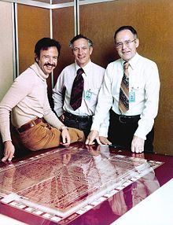
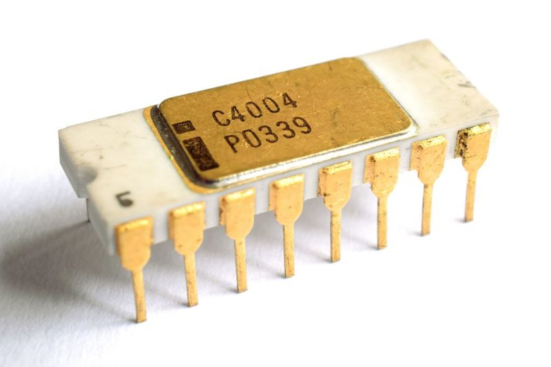

Intel was founded in Mountain View, California, in 1968 by Gordon E. Moore (of "Moore's law" fame), a chemist, and Robert Noyce, a physicist and co-inventor of the integrated circuit. Arthur Rock (investor and venture capitalist) helped them find investors, while Max Palevsky was on the board from an early stage. Moore and Noyce had left Fairchild Semiconductor to found Intel. Rock was not an employee, but he was an investor and was chairman of the board. The total initial investment in Intel was $2.5 million convertible debentures and $10,000 from Rock. Just 2 years later, Intel became a public company via an initial public offering (IPO), raising $6.8 million ($23.50 per share). Intel's third employee was Andy Grove a chemical engineer, who later ran the company through much of the 1980s and the high-growth 1990s.
In deciding on a name, Moore and Noyce quickly rejected "Moore Noyce",near homophone for "more noise" – an ill-suited name for an electronics company, since noise in electronics is usually undesirable and typically associated with bad interference. Instead, they founded the company as N M Electronics on July 18, 1968, but by the end of the month had changed the name to Intel which stood for Integrated Electronics. Since "Intel" was already trademarked by the hotel chain Intelco, they had to buy the rights for the name.

Early history
At its founding, Intel was distinguished by its ability to make logic circuits using semiconductor devices. The founders' goal was the semiconductor memory market, widely predicted to replace magnetic-core memory. Its first product, a quick entry into the small, high-speed memory market in 1969, was the 3101 Schottky TTL bipolar 64-bit static random-access memory (SRAM), which was nearly twice as fast as earlier Schottky diode implementations by Fairchild and the Electrotechnical Laboratory in Tsukuba, Japan. In the same year, Intel also produced the 3301 Schottky bipolar 1024-bit read-only memory (ROM) and the first commercial metal–oxide–semiconductor field-effect transistor (MOSFET) silicon gate SRAM chip, the 256-bit 1101. While the 1101 was a significant advance, its complex static cell structure made it too slow and costly for mainframe memories. The three-transistor cell implemented in the first commercially available dynamic random-access memory (DRAM), the 1103 released in 1970, solved these issues. The 1103 was the bestselling semiconductor memory chip in the world by 1972, as it replaced core memory in many applications. Intel's business grew during the 1970s as it expanded and improved its manufacturing processes and produced a wider range of products, still dominated by various memory devices.
Federico Faggin, the designer of Intel 4004
While Intel created the first commercially available microprocessor (Intel 4004) in 1971 and one of the first microcomputers in 1972, by the early 1980s its business was dominated by dynamic random-access memory chips. However, increased competition from Japanese semiconductor manufacturers had, by 1983, dramatically reduced the profitability of this market. The growing success of the IBM personal computer, based on an Intel microprocessor, was among factors that convinced Gordon Moore (CEO since 1975) to shift the company's focus to microprocessors and to change fundamental aspects of that business model. Moore's decision to sole-source Intel's 386 chip played into the company's continuing success. The development of the micro-processor by Intel, (1971): The micro-processor represented a notable advance in the technology of integrated circuitry. A micro-processor miniaturized the central processing unit of a computer, which then made it possible for small machines to perform calculations that in the past only very large machines could do. Considerable technological innovation was needed before the micro-processor could actually become the basis of what was first known as a "mini computer" and then known as a "personal computer".
By the end of the 1980s, buoyed by its fortuitous position as microprocessor supplier to IBM and IBM's competitors within the rapidly growing personal computer market, Intel embarked on a 10-year period of unprecedented growth as the primary (and most profitable) hardware supplier to the PC industry, part of the winning 'Wintel' combination. Moore handed over to Andy Grove in 1987. By launching its Intel Inside marketing campaign in 1991, Intel was able to associate brand loyalty with consumer selection, so that by the end of the 1990s, its line of Pentium processors had become a household name.

Dominance in 2000
After 2000, growth in demand for high-end microprocessors slowed. Competitors, notably AMD (Intel's largest competitor in its primary x86 architecture market), garnered significant market share, initially in low-end and mid-range processors but ultimately across the product range, and Intel's dominant position in its core market was greatly reduced. In the early 2000s then-CEO, Craig Barrett attempted to diversify the company's business beyond semiconductors, but few of these activities were ultimately successful.